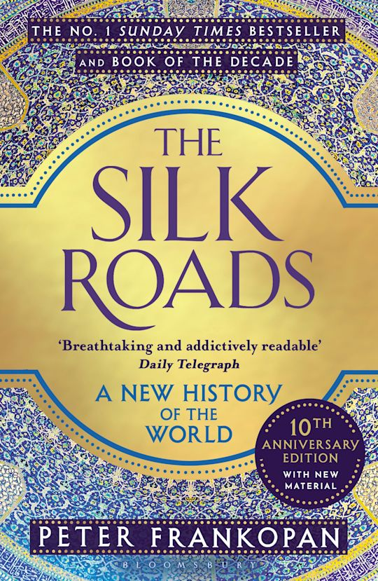

The Silk Roads
History
Religion
Islam
Description
A New History of the World by Peter Frankopan is a non-fiction history book that shifts the focus of global history away from a Europe-centered view and instead places the Silk Road regions at the center of world development. The book explains that the ancient trade routes linking Asia, the Middle East, and Europe were not only used for goods like silk and spices, but also for spreading religions, scientific knowledge, cultures, and political influence. Through these networks, major world religions such as Buddhism, Christianity, and Islam spread across continents, shaping societies and empires over centuries.
Book Details
Publisher
Stanford University Press
ISBN
978-0804781473
Publication Date
May 22, 2013
File Size
~2-3 MB
Format
PDF, EPUB